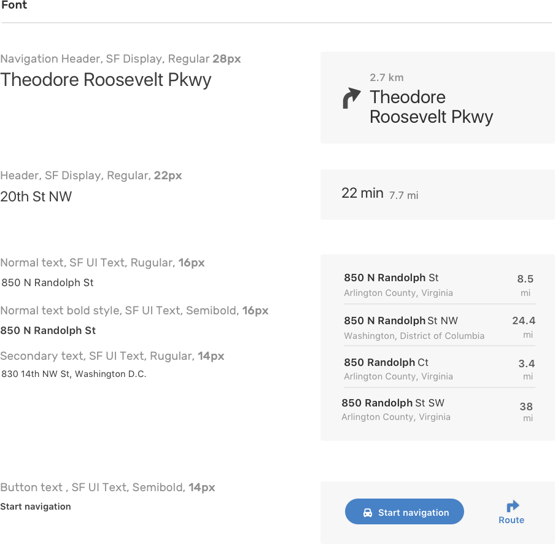
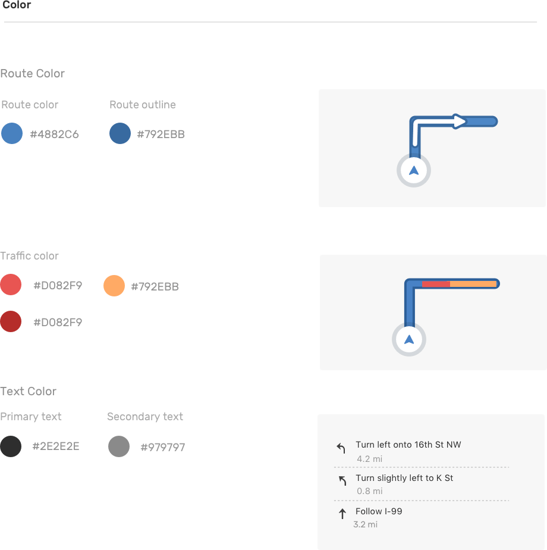

Mapbox Navigation SDK is a product we released earlier this year available on both iOS and Android. It provides a simple, customizable framework for developers to add turn-by-turn navigation to their application. For this project, I was tasked to collaborate closely with the cartography, iOS and Android engineer team to create a customizable design system for the SDK.
In addition to the mobile UI, I also designed a landing page and a marketing package for the sales team to showcase what's possible with the SDK.
Styleguide
I started from creating a simple, easy-to-customize font and color system for the UI.


Direction Icons
I mocked up how icons look at different sizes to make sure they are legible in all the contexts.
Interactions
Framer prototypes helped better communicate interaction details like sound toggle, menu drawer and route list view.


Dark and Light Theme
The SDK provides two default UI styles, light and dark, that's suitable for daytime and nighttime driving. Our amazing cartographer Nat Slaughter designed those two map styles.

Example Apps
The SDK allows developers to take control of user’s experience all the way to their final destination. Here are a few scenarios to showcase what the in-app navigation flow looks like and how it can be customized for different use cases.